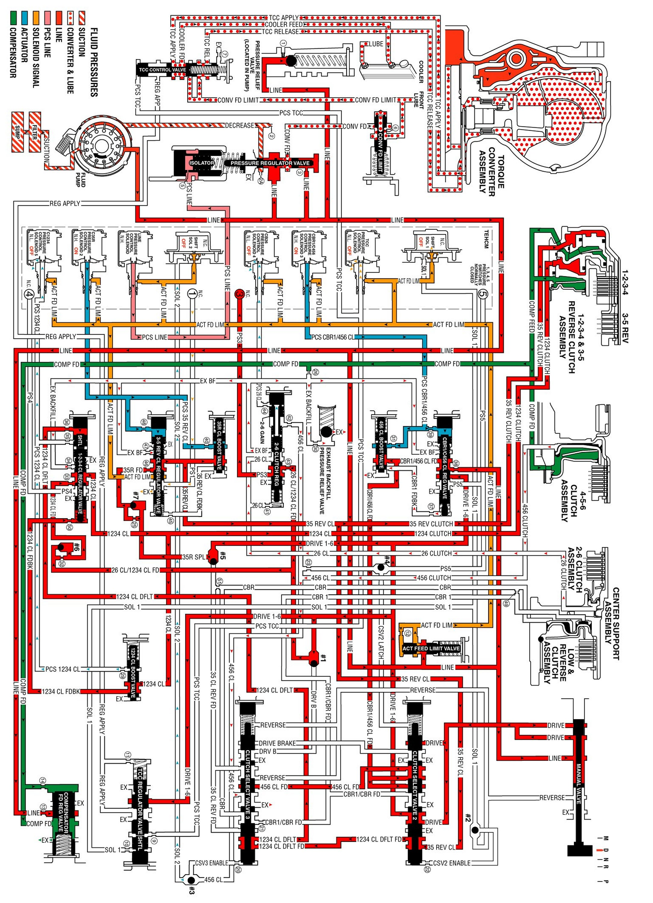

Drive Range, Third Gear Default
Drive Range, Third Gear Default
If the transmission is in 1st, 2nd or 3rd gear during a transmission electrical component failure, the transmission will default to 3rd gear. All solenoids will default to their normal state. If the torque converter clutch was applied, it will release. This default action will enable the vehicle to be safely driven to a service center.
1-2-3-4 Clutch Stays Applied
Shift Solenoid 2
Shift solenoid 2 defaults to it's normally-closed state (OFF), and SOL 2 fluid exhausts through the solenoid.
Clutch Select Valve 3
Solenoid 2 fluid pressure no longer holds the clutch select valve 3 open. When the valve moves back to the closed position, it opens the 1234 clutch default fluid circuit, and 1234 default fluid is routed to the 1-2-3-4 clutch regulator valve.
1-2-3-4 Clutch Regulator Valve
With the absence of PCS 1234 clutch fluid, due to the default state of the C1234 pressure control solenoid 5, the 1-2-3-4 regulator valve would close from spring force. However, the 1234 clutch default fluid enters behind the 1-2-3-4 regulator shuttle valve and keeps the valve in the open position.
1-2-3-4 Clutch
With the 1-2-3-4 clutch regulator valve still held in the open position, the 1-2-3-4 clutch will stay applied.
3-5 Reverse Clutch Applied or Applies
C35R Pressure Control Solenoid 2
The normal state for the C35R pressure control solenoid 2 is ON, therefore PSC 35 reverse clutch fluid will still be routed to the 3-5 reverse clutch regulator valve and the 3-5 reverse clutch boost valve.
3-5 Reverse Clutch Regulator Valve
PCS 3-5 reverse clutch fluid moves the 3-5 reverse clutch regulator valve against 3-5 reverse clutch regulator valve spring force and 3-5 reverse clutch feedback fluid. This allows 3-5 reverse feed to pass through the valve and enter the 3-5 reverse clutch circuit. 3-5 reverse clutch fluid is then routed to the 3-5 reverse clutch, the 3-5 reverse boost valve and the clutch select valve 2. When the 3-5 reverse clutch regulator valve is in this position, PS1 fluid from the pressure switch 1 exhausts through the valve, allowing the switch to close.
3-5 Reverse Clutch Boost Valve
PCS 3-5 reverse clutch fluid pressure acts on a differential area moving the 3-5 reverse clutch boost valve against the 3-5 reverse clutch boost valve spring. The 3-5 reverse clutch fluid passes through the valve and enters the 3-5 reverse clutch feedback circuit. As PCS 3-5 reverse clutch fluid pressure is increased to a given value, the 3-5 reverse clutch boost valve opens the 3-5 reverse clutch feedback circuit to exhaust. This results in the 3-5 reverse clutch regulator valve moving to the full feed position sending full 3-5 reverse clutch feed pressure (full line pressure) to the clutch.
3-5 Reverse Clutch
The 3-5 reverse clutch fluid enters the 1-2-3-4 and 3-5 reverse clutch housing to move the piston against spring force combined with force from the compensator to apply the 3-5 reverse clutch plates.
Drive Range, Third Gear Default
Drive Range, Third Gear Default:
